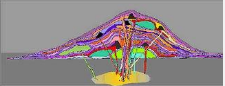
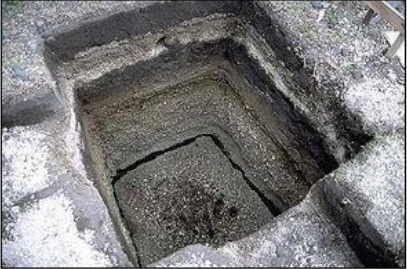

Strato Volcanoes comprise the largest percentage (~60%) of the Earth's individual volcanoes and most are
characterized by eruptions of
andesite and
dacite - lavas that
are cooler and more viscous than
basalt. These more viscous lavas allow gas pressures
to build up to high levels (they are effective "plugs" in the plumbing), therefore these volcanoes often
suffer explosive eruptions.

Strato volcanoes are usually about half-half lava and
pyroclastic material, and the layering of these products gives them thei other
common name of composite volcanoes.
Left: This is a schematic diagram of a strato volcano, intended to illustrate the different layers of
different materials tha comprise them. The purple colors are meant to represent
ash layers, either the products of fall-out from big eruption clouds o the products of
pyroclastic flows. Notice that these ash layers tend to be thin but widespread. The orange colors
represen lava flows, and note that some of them have cinder cones associated with them at the vent. The green colors are meant to represent lava domes, and notice that they
do not flow very far. Each eruption, regardless of what it produces, is fed from the magma chamber by a dike. Most dikes come up through the
center of the volcano and therefore most eruptions occur from a or near the summit. However, some dikes
head off sideways to feed eruptions on the flanks.

Right: This is a pit that has been dug into the ground at Cotopaxi, a big strato volcano near Quito, the
capital city of Ecuador. The pit is about 2 meters deep and in it you can clearly see a number of ash
layers exposed. It is also easy to see that the layers are different - some are coarse and others are
fine, some are dark-colored and others are light-colored
The lava at strato volcanoes occasionally forms 'a'a, but more commonly it barely
flows at all, preferring to pile up in the vent to form volcanic domes. Some strato volcanoes are just a
collection of domes piled up on each other. Strato volcanoes are commonly found along subduction-related
volcanic arcs, and the magma supply rates to strato volcanoes are lower. This is
the cause of the cooler and differentiated magma compositions and the reason for the usually long repose periods between eruptions. Examples of strato volcanoes include Mt. St.
Helens, Mt. Rainier, Pinatubo, Mt. Fuji, Merapi, Galeras, Cotopaxi, and super plenty others.